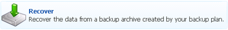
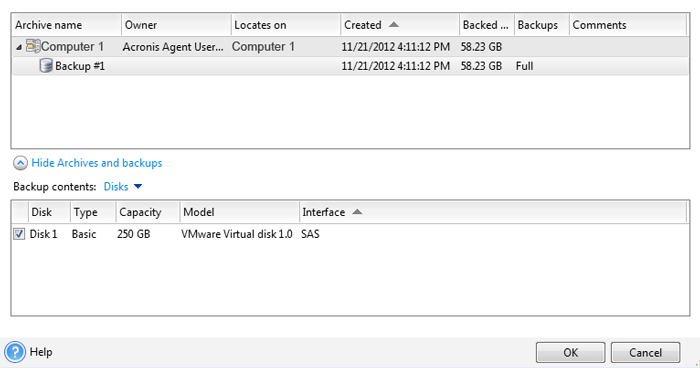

- Power off the computer.
- Replace the damaged hard drive with a hard drive that has the same capacity as, or greater capacity than, the damaged hard drive.
- Power on the computer.
Ensure that only the keyboard and mouse are connected to the computer while performing a recovery.
- Press F9 and verify that Boot from CD is the first item on the list.
- Insert the Acronis Bootable Rescue Media (CD or DVD) into the computer.
In the event that an Acronis Bootable Rescue Media for Windows is not available or has been misplaced, the Acronis Bootable Rescue Media can be created using another proDAS Windows based computer which is running Acronis.
- Reboot the computer.
- A screen with three (3) options might be displayed. The options are:
- continue Acronis with a 32 bit system
- continue Acronis with a 64 bit system
- continue booting the OS from the hard drive
Select either 32 or 64 bit system, as required for the system configuration of the computer.
- From the Acronis Bootable Agent window, select Configure Network.
- Deselect the Auto Configuration check box.
- Specify the IP address previously assigned for the computer on the proDAS network. See To obtain the subnet mask and default gateway for more information.
The IP address, Subnet Mask and Default Gateway information should be noted and saved to be used in the following step in the disaster recovery procedure.
- Specify the Subnet Mask and Default Gateway previously assigned to the computer.
- Click OK to close the Network Settings window.
- Select Manage this machine locally.
- Select the Recover option on the Acronis main window.

The Recover data window is displayed.
- In the What to recover section, select Select data...
The Data to Recover Selection window is displayed.
- In the Data to Recover Selection window, select Browse.
- In the Path field, enter \\<backupfoldername>\Backups
- Log in as Administrator.
- Select the Archive file to recover and click OK.
The Recover Data window is displayed.
- In the Where to recover section, select Required.
- In the Backup contents drop down menu, select Disks.
- Select the Disk 1 checkbox and click OK.

The Recover Data window is displayed.
- Click OK.
Data recovery proceeds.